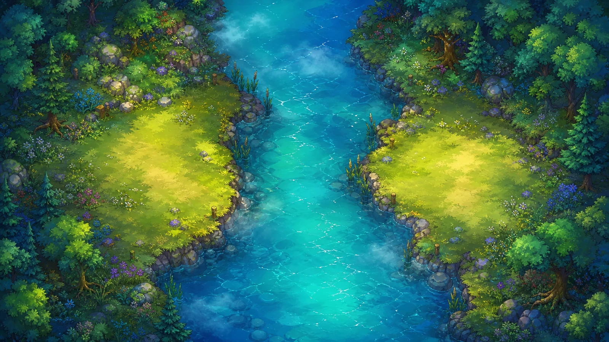
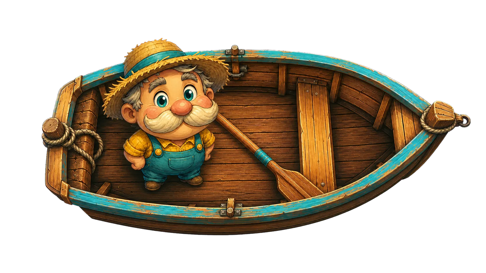

HOME BANK FAR BANK
Can you help me cross the river?
LOADING SHADER / LIVE WEBGPU
DYNLEX / OPEN SKETCH
Code can sound like the thing it describes. In DynLex, a useful phrase becomes part of the language of the project.
CODING CHALLENGE / 01

HOME BANK FAR BANK
An error occurred. Check the log.
PROJECT VOCABULARY
The sketch is alive.
DYNLEX STUDIO
DYNLEX / LOCAL TOOLS